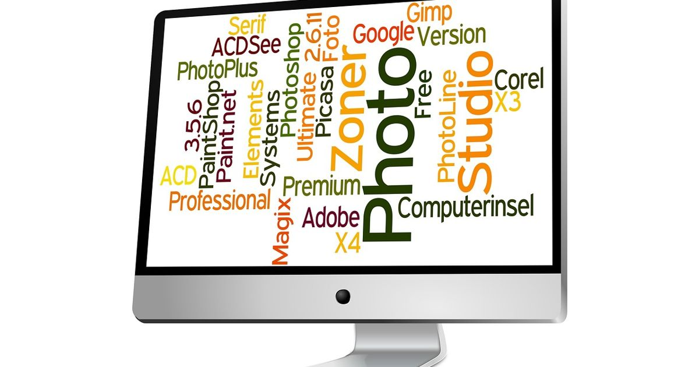

How to Use AI for Photo Editing: A Step‑by‑Step Guide

Key takeaways
- AI editors save time and money
- Choose tools that match your business niche
- Automate repetitive edits for brand consistency
- Use templates for quick social media posts
- Backup edits to cloud or WhatsApp for safety
- Why AI Photo Editing Matters for Small Businesses
- Top AI Photo Editing Tools (2024)
- How to Set Up a Simple AI Editing Workflow
- Creating Consistent Brand Style with AI Templates
- Integrating AI Edits into Your Social Media Calendar
- Storing and Backing Up AI‑Edited Images
- Common Mistakes to Avoid with AI Photo Editing
- Future Trends: AI in Photo Editing
AI has transformed photo editing, letting you enhance images in seconds without professional skills. Whether you’re a retailer, restaurateur, or real‑estate agent, AI tools can streamline your visual content creation.
In this guide you’ll learn which AI editors work best for business needs, how to set up a simple workflow, and how to keep your brand style consistent.
Why AI Photo Editing Matters for Small Businesses
Why AI Photo Editing Matters for Small Businesses
High‑quality visuals are a direct driver of sales for any small business, whether the product sits on a shelf, a dish appears on a menu, or a post promotes a service on social media. Investing in efficient photo editing translates into measurable returns:
- Return on Investment (ROI): A modest upgrade from basic editing to automated enhancements can increase conversion rates by 5‑10 % on e‑commerce listings. For a shop generating $20,000 in monthly online sales, that improvement adds $1,000–$2,000 in revenue per month, easily covering the $30‑$150 subscription cost of a professional editing suite.
- Time savings: Batch processing reduces the average editing time from 5‑10 minutes per image to under a minute. Editing 200 product photos drops from 17‑33 hours to roughly 3‑4 hours, freeing staff to focus on customer service or inventory.
- Brand consistency: Uniform color balance, lighting, and cropping reinforce brand identity across product catalogs, menu cards, and social feeds. Consistency builds trust; customers are more likely to purchase when visuals look cohesive.
Practical examples illustrate the impact:
- Product photos: A boutique clothing store updates 150 item images each season. Automated background removal and color correction cut the turnaround from two weeks to three days, allowing faster restocks.
- Menu images: A café refreshes its online menu monthly. Consistent lighting and style applied to 30 dish photos in under an hour keeps the website looking fresh without hiring a photographer.
- Social media posts: A local gym schedules three weekly posts. Batch‑edited workout images maintain the brand’s energetic look, reducing design time from 30 minutes per post to 5 minutes.
Typical price ranges for reliable editing platforms are $30‑$150 per month for a business plan, with optional per‑image credits for occasional high‑volume spikes. When the cost is weighed against the added revenue, reduced labor, and stronger brand perception, the financial case is clear: streamlined photo editing is not a luxury—it’s a competitive necessity for small businesses aiming to grow profitably.
Top AI Photo Editing Tools (2024)
Top AI Photo Editing Tools (2024)
Small businesses need fast, reliable editors that work on a budget and across devices. Below is a quick rundown of five popular options, followed by a side‑by‑side comparison.
- Adobe Photoshop Express AI – Cloud‑based, offers one‑tap enhancements and background removal.
Pros: Industry‑standard algorithms, integrates with Adobe Creative Cloud.
Cons: Limited advanced controls compared with full Photoshop.
Pricing: Free tier; premium features $9.99 / month.
Platforms: iOS, Android, Web. - Canva Photo Editor – Drag‑and‑drop interface with template library.
Pros: Easy branding templates, collaborative sharing.
Cons: Less fine‑tuned color grading.
Pricing: Free plan; Pro $12.95 / month (or $119 / year).
Platforms: Web, iOS, Android. - Luminar AI – Standalone desktop app focused on automated enhancements.
Pros: Powerful sky replacement, portrait tools.
Cons: Desktop‑only, larger install size.
Pricing: One‑time license $79 (often discounted to $59).
Platforms: Windows, macOS. - ClipDrop – Real‑time object capture and background removal for product shots.
Pros: Instant high‑resolution cut‑outs, AR preview.
Cons: Requires good lighting for best results.
Pricing: Free limited credits; Pro $9 / month.
Platforms: iOS, Android, Windows, macOS, Web. - Remove.bg – Specialized background removal service.
Pros: Fast batch processing, API for automation.
Cons: No broader editing suite; credits‑based pricing can add up.
Pricing: Pay‑as‑you‑go $0.20 per image; subscription $9 / month for 100 images.
Platforms: Web, API, macOS, Windows.
Use the table to match tools with your workflow needs.
| Tool | Best For | Price Range | Platform |
|---|---|---|---|
| Adobe Photoshop Express AI | Quick social‑media tweaks | $0–10 / mo | iOS/Android/Web |
| Canva Photo Editor | Brand‑consistent templates | $0–13 / mo | Web/iOS/Android |
| Luminar AI | High‑quality product photography | $59–79 one‑time | Windows/macOS |
| ClipDrop | Live object capture | $0–9 / mo | All major OS & Web |
| Remove.bg | Bulk background removal | $0.20 per image or $9 / mo for 100 | Web/API/Desktop |
How to Set Up a Simple AI Editing Workflow
How to Set Up a Simple Editing Workflow
Small business owners can create a repeatable photo‑editing pipeline that saves time and keeps visual content on‑brand. Follow these five steps to move from raw image to scheduled post without manual bottlenecks.
- Upload files to a cloud folder. Use a service such as Google Drive, Dropbox, or OneDrive. Create a dedicated folder (e.g., Product Shots – Raw) and set the sharing permission to anyone with the link can view. This makes the next steps accessible from any device and simplifies collaboration with designers or marketing staff.
- Run auto‑enhance. Most modern editors include a one‑click enhancement that balances exposure, contrast, and color temperature. Apply the feature to the entire folder using the batch‑process option. Typical subscription costs for these tools range from $10‑$30 USD per month for a small‑team plan.
- Apply brand presets. Create a set of preset adjustments that reflect your brand palette, logo placement, and text overlay style. Save the preset as a template and apply it to the batch‑processed images. A preset library eliminates the need to recreate the same look for every product launch.
- Batch export in required formats. Export the edited files in the dimensions and file types needed for each platform (e.g., 1080 × 1080 px JPEG for Instagram, 1200 × 628 px PNG for Facebook ads). Most editors let you set multiple export profiles and run them simultaneously, cutting export time by up to 70 %.
- Schedule posts. Connect the export folder to a social‑media scheduler such as Buffer, Later, or Hootsuite. Import the batch of images, attach pre‑written captions, and set publishing dates. Basic plans start around $15‑$25 USD per month, while enterprise tiers add analytics and team approvals.
Checklist for a smooth workflow
- Folder structure clearly labeled (Raw, Edited, Export)
- Preset library saved and version‑controlled
- Export profiles matched to each platform’s specs
- Scheduler linked to the export folder
- Backup routine (see the storage section) runs nightly
By automating these steps, a small shop can turn a dozen product photos into ready‑to‑post assets in under an hour, freeing up staff to focus on customer engagement and sales.
Creating Consistent Brand Style with AI Templates
Creating Consistent Brand Style with Templates
Small‑business owners need a visual identity that instantly signals their brand, and a well‑curated template library makes that possible without hiring a designer for every image.
Step‑by‑step checklist:
- Define core elements. List your brand colors (hex codes), primary fonts, logo placement, and any recurring graphic motifs.
- Build the template folder. Create a master folder on your computer or cloud drive. Inside, add subfolders for product shots, social posts, and promotional banners. Save a blank canvas for each size (e.g., 1080×1080 px for Instagram, 1200×628 px for Facebook ads).
- Apply color grading. Use a batch‑processing preset to adjust exposure, contrast, and saturation so every photo shares the same tonal range. Typical presets cost between $10‑$30 on marketplace sites, but many free options exist.
- Insert watermarks. Design a semi‑transparent logo or text watermark that sits in the lower‑right corner. Save the watermark as a PNG with an alpha channel; most tools let you apply it to a whole folder in seconds.
- Set up auto‑apply rules. Choose a tool that supports “style bundles.” Upload your template files, then map the brand elements (colors, fonts, watermark) to the bundle. When you drop a new photo into the designated folder, the software automatically layers the template, applies the grading preset, and adds the watermark.
- Test and refine. Run a few sample images through the workflow. Check that the logo is legible on both light and dark backgrounds and that the color grading doesn’t wash out product details. Adjust the preset opacity or watermark opacity as needed.
Typical cost considerations:
- Batch‑processing presets: $0‑$30 (free plugins or paid packs).
- Template‑management software: $15‑$50 per month for small‑team plans.
- Cloud storage for the library: $5‑$10 per month for 1 TB.
By keeping a single source of truth for visual style, you eliminate the guesswork that often leads to inconsistent branding. Once the library is in place, new product launches, seasonal promos, or daily social posts can be produced in minutes, freeing up time for other business priorities.
Integrating AI Edits into Your Social Media Calendar
Integrating Edits into Your Social Media Calendar
Consistent visual content keeps a small business top‑of‑mind on platforms like Instagram, Facebook, and LinkedIn. By linking edited images directly to a scheduling workflow, you can maintain a steady posting rhythm without manual bottlenecks.
- Choose a scheduling tool. Popular options include Buffer ($15‑$99 / month), Later ($12‑$80 / month), and Hootsuite ($19‑$599 / month). All provide a calendar view where you can drag‑and‑drop images and write captions in advance.
- Prepare a content batch. Export a set of 10‑15 edited photos each week. Name files with a clear convention, e.g., product‑01‑spring‑sale.jpg, to simplify lookup.
- Attach metadata. Add alt‑text and hashtags directly in the scheduling app. This improves accessibility and discoverability without extra steps later.
- Set posting times. Use the tool’s analytics to identify peak engagement windows for your audience. Schedule posts for those slots and enable auto‑posting to avoid manual uploads.
- Monitor performance. After each post, review likes, comments, and click‑through rates. Most schedulers provide a simple dashboard; export the data weekly for a quick snapshot.
- Adjust editing parameters. If a particular style (e.g., high‑contrast product shots) yields higher engagement, note the settings used—such as exposure boost or color balance—and apply them to future batches.
Quick checklist for each publishing cycle
- Export edited images with consistent naming.
- Upload to scheduling tool and add alt‑text/hashtags.
- Assign optimal posting times based on past data.
- Enable auto‑post and confirm time zones.
- Review engagement metrics within 48 hours.
- Refine editing presets based on top‑performing posts.
By treating edited visuals as reusable assets and feeding them through an automated calendar, small businesses can free up hours each week, keep their brand look cohesive, and continuously improve based on real‑world feedback.
Storing and Backing Up AI‑Edited Images
Storing and Backing Up Edited Images
High‑quality visuals are a business asset, and losing a single edited file can mean wasted time and missed revenue. A disciplined storage strategy protects your work and keeps the creative pipeline moving smoothly.
1. Local backup – the first line of defense
- Save the original raw file and the final edited version in a dedicated folder on your computer, e.g., Projects/BrandPhotos/2024/.
- Enable the built‑in file‑history feature (Windows File History or macOS Time Machine) to capture hourly snapshots.
- Set the backup drive to run automatically at least once a day; a 2‑TB external HDD costs roughly $70–$100 and provides ample space for a small business.
2. Cloud storage – Google Drive
- Upload both raw and edited files to a folder that mirrors your local structure.
- Use the “Add to My Drive” shortcut for quick access from any device.
- Google Workspace Business Starter offers 30 GB per user for about $6 per month, which is sufficient for most small‑shop photo libraries.
- Enable “Version history” in Drive settings; this automatically retains previous versions for up to 30 days, allowing you to revert if a later edit overwrites a better version.
3. Mobile‑friendly backup – WhatsApp
WhatsApp can serve as a quick, informal backup for on‑the‑go edits:
- Create a private group named “Photo Backups”.
- Share edited images as “Document” (not as media) to preserve original resolution.
- Set the group to “Only admins can send messages” to avoid clutter.
- Export the chat monthly (Settings → More tools → Export chat) and store the resulting ZIP on your external drive.
4. Version control – why it matters
Every edit cycle produces a new file version. Without clear versioning, you risk mixing up drafts, re‑doing work, or publishing the wrong image. Implement a simple naming convention:
product‑name_YYYYMMDD_v01.jpg product‑name_YYYYMMDD_v02.jpgCouple the naming scheme with the cloud’s version history feature. For critical campaigns, consider a lightweight version‑control tool such as Git LFS (free for private repos up to 1 GB) to track changes and collaborate with designers.
By combining local redundancy, cloud sync, mobile backup, and disciplined versioning, small business owners safeguard their visual assets while keeping retrieval fast and cost‑effective.
Common Mistakes to Avoid with AI Photo Editing
Common Mistakes to Avoid with AI Photo Editing
Small business owners often rush into automated image enhancements without a clear plan, which can backfire in subtle but costly ways. Below is a practical checklist of pitfalls to watch for and how to sidestep them.
- Over‑processing the image
When the algorithm boosts contrast, saturation, or sharpness too aggressively, the result looks artificial and can alienate customers. Aim for a natural look that matches your brand palette. A good rule of thumb: apply no more than 15 % of the total adjustment range for each parameter, then compare the edited version side‑by‑side with the original.
- Losing fine detail
Excessive noise reduction or aggressive upscaling can erase texture that conveys product quality. Preserve detail by:
- Zooming to 100 % before finalizing any change.
- Using a selective mask to protect edges and high‑frequency areas.
- Saving a copy of the original layer for reference.
- Ignoring copyright and usage rights
Many automated tools embed stock elements or filters that are subject to licensing. Before publishing, verify that the output does not contain restricted assets. Keep a simple log:
- Record the tool version and date of edit.
- Note any third‑party assets used.
- Store the license file alongside the final image.
- Not testing on multiple devices
Colors and brightness can shift dramatically between a desktop monitor, a smartphone screen, and a printed flyer. Test the edited image on at least three platforms:
- Desktop browser (calibrated monitor).
- Mobile device (both iOS and Android if possible).
- Print proof (use a local print shop’s standard paper).
By systematically reviewing each of these areas, you can keep your visual content professional, legally safe, and consistent across all customer touchpoints. Typical software subscriptions that support these safeguards range from $15 to $45 per month, while one‑time desktop licenses often sit between $80 and $200. Investing in a disciplined workflow pays off in brand credibility and avoids costly re‑edits later.
Future Trends: AI in Photo Editing
Future Trends: AI in Photo Editing
Generative models are shifting the workflow from manual retouching to automated content creation. By feeding a base image and a style prompt, these systems can generate realistic background replacements, texture overlays, or even new product shots that match the brand’s aesthetic. For small businesses, this means a 30‑50% reduction in time spent on sourcing stock photos and a higher consistency across catalogs.
Real‑time editing is another breakthrough. Edge‑device processors now support on‑camera enhancement, allowing instant adjustments to exposure, color balance, and noise reduction. This is especially useful for mobile point‑of‑sale setups where staff need to capture product images on the fly. A typical workflow involves:
- Capture: Use a smartphone or tablet with a dedicated editing app.
- Apply presets: Select a pre‑built style that matches the product line.
- Fine‑tune: Adjust sliders for sharpness and contrast within seconds.
- Export: Save to a cloud folder synced with the e‑commerce platform.
The rise of e‑commerce image optimization focuses on delivering the best visual experience while keeping load times low. Techniques such as perceptual compression, adaptive resolution, and automated watermarking are becoming standard. Typical costs for a subscription to a full‑stack image service range from $30 to $120 per month, depending on image volume and feature set.
To stay ahead, small businesses should:
- Integrate a cloud‑based editing suite that offers both generative and real‑time tools.
- Set up automated pipelines that push edited images directly to product pages.
- Monitor performance metrics—image load time, conversion rate, and customer feedback—to fine‑tune the balance between quality and speed.
By adopting these emerging trends, retailers can streamline visual content creation, maintain brand consistency, and improve the overall online shopping experience.
Frequently asked questions
Can I use AI photo editing for product images on my website?
Yes, AI tools can automatically correct lighting, remove backgrounds, and enhance colors, making product photos look professional without a photo studio.
Do AI editors require a subscription?
Many offer free tiers with limited features. For full functionality, paid plans range from $10 to $30/month, but they often include bulk processing and cloud storage.
Will AI editing keep my brand style?
By saving presets or templates, AI editors can consistently apply your brand colors, filters, and watermarks across all images.
Can I edit images on my phone?
Absolutely. Most AI editors have mobile apps that let you retouch photos on the go, ideal for quick social media updates.
Is it safe to store images on WhatsApp for backup?
WhatsApp can be used for quick, informal backups, but for long‑term storage, use a dedicated cloud service with proper encryption.
Need a POS system, website or app for your business?
I build affordable custom POS software, business websites and mobile apps for shops and restaurants worldwide.
Get a free quote